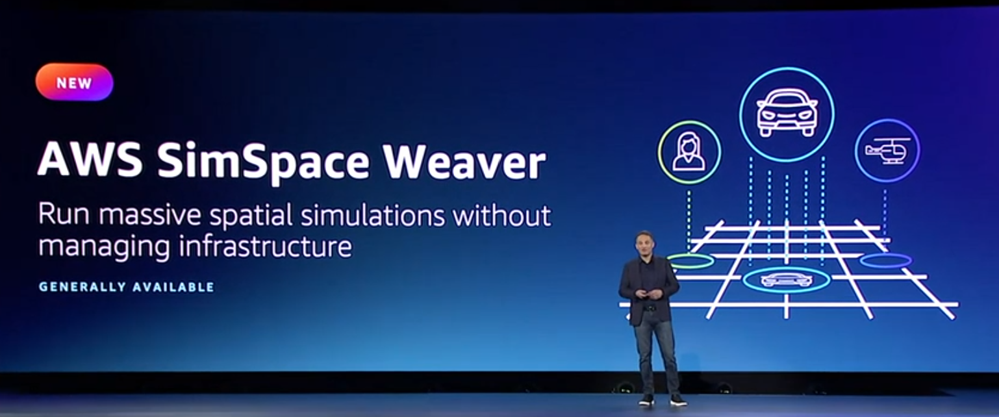
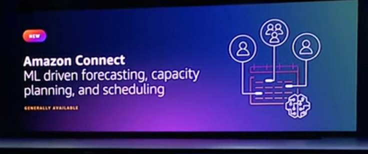

AWS Adam Selipsky Keynote
From Adam’s keynote, we learned that over 50K Customers and Partners are attending re:Invent this year, and boy does it feel like it. Even though I’m spending most of my time at the Wynn, I occasionally have to make a trek over to the Venetian for a keynote, or session. That’s when the crush hits me, all of us crammed into corridors seemingly going every direction possible, except where I am going.
I wanted to capture all the big announcements from this keynote in one spot, plus add a little commentary and takeaways. In another post I’m cataloging all of the announcements by Area and Product. You can checkout what this looks like at the end of the post.
If you see something wrong, or missing, hit me up on Mastodon, LinkedIn, or Twitter.
The Intro
The preamble to the announcements was somewhat predictable if not old. Sustainability Goals, Companies moving Critical Workloads (NASDAQ) to the Cloud. Re-iterated all the benefits of cloud, Velocity, Agility, Elasticity, Cost (who hasn’t heard this by now?).
There was a great slide that sums up all of the above. The cloud allows you to “Be Prepared for Anything”. Cyber-Monday? No problem, scale up. Pandemic and no one is needing your service? Scale down, or off. Need to try something new? Get up and running quickly. Need to Pivot? Shut off that service.
OK, onto the announcments!
Announcement 1 - OpenSearch Serverless >
Run large-scale search and analytics workloads without managing clusters. Pay only for the data that is ingested and the queries you run.
Takeaway: AWS now has a complete “Serverless” offering for its analytics services. OpenSearch is AWS’s implementation of ElasticSearch. This allows teams to get up and running quickly with minimal cost, allowing for rapid solution prototyping a variety of use cases for a number of use cases such as log analytics, application search, enterprise search, and more.
Theme AWS zero-ETL Vision
Adam announced AWS zero-ETL vision. Traditional data engineering requires multiple data pipelines to get data from transactional / operational databases to data warehouses (Redshift). These all need to be tested, and changed according to business needs (lots of work). The zero-ETL vision seeks to eliminate the need for this in the future. The next two announcements contribute to this vision.
Announcement 2 - Aurora zero-ETL integration with Redshift >
Enable near real-time analytics and machine learning (ML) using Amazon Redshift on petabytes of transactional data from Aurora. Within seconds of transactional data being written into Aurora, the data is available in Amazon Redshift, so you don’t have to build and maintain complex data pipelines to perform extract, transform, and load (ETL) operations.
Takeaway: This is initially only supported on Aurora MySQL3 databases and is currently in Preview. IMO it eliminates E (extract) and L (load), because the way I currently understand it, transactional data is written as in Aurora (no T - Transformation) of data takes place. This does solve the problem of having users query/perform analytics on Operational Databases, by shuffling the data to Redshift, thereby reducing impact to Operational Processes.
Announcement 3 - Redshift integration for Apache Spark >
Builds upon an existing open-source connector project and enhances it for performance and security, helping customers gain up to 10x faster application performance.
Takeaway: This was an existing capability via an Open Source Project started by Databricks and maintained by the community. Amazon worked with the community to improve the performance and security, elevating it to a fully supported feature. (so existing capability that is not officially supported).
Announcement 4 - Datazone (New Service!) >
Data Governance - a data management service that you can use to publish data and make it available to the business data catalog through your personalized web application. You can access your data more securely regardless of where it is stored.
Takeaway: Governance? People don’t want to hear about governance, but they can get behind data discovery, data quality, data access, and data security. Get with your Data Analysts, and they will tell you “just give me access”. Well, with the newly announced Amazon Datazone, you can stop talking about governance, and instead improve the usability of data for your analysts (and govern your data). AWS was lacking this capability. Azure had “Data Catalog”, which was “rebooted” into Azure Purview. This is an enterprise need. Lot’s of integration with AWS data products.
Announcement 5 - Security Lake >
Automatically centralizes your organization’s security data from cloud and on-premises sources into a purpose-built data lake stored in your account.
Takeaway: Provides alternatives to SIEM (Security Incident and Event Management) products (eg Splunk), and provides integrations with existing AWS Services. Benefit of a common schema for logging (OCSF) Open Cybersecurity Schema Framework, for potential interoperability with 3rd party services.
Announcement 6 - More Compute Instances
Building upon advancements highlighted in Peter DeSantis’ keynote yesterday, multiple new EC2 compute instances were announced, from standard workloads, network and HPC intensive workloads, and Deep Learning workloads.
Takeaway: This is an AWS core competency, as we saw from last nights keynote, the engineering happening at the datacenter and silicon level is paying dividends at the compute level. Some of these machines are very highly specialized for large workloads (life sciences, industrial engineering, etc), not something a lot of enterprises use.
Announcement 7 - SimSpace Weaver >
A new compute service to run real-time spatial simulations in the cloud and at scale. SimSpace Weaver is great at simulating crowds. This is very useful, for example, when you’re planning large events or planning to build infrastructure like a new stadium. It is also ideal for simulating smart cities, complete with vehicles, inhabitants, and other objects.

Takeaway: Highly specialized service. If you are running these types of workloads today, you will be really happy to see this, if not..ho hum.
Announcement 8 - Connect Capabilities >
- Create step-by-step guides for your agents
- ML Driven forecasting, capacity planning, and scheduling
- Contact Lens Enhancements

Takeaway: New features added. In the future AWS should break these BizApps out to a separate conference, especially as they continue to grow their portfolio (see SupplyChain announcement)
Announcement 9 - Clean Rooms (New Service!) >
Helps customers and their partners to more easily and securely match, analyze, and collaborate on their combined datasets–without sharing or revealing underlying data.
Takeaway: Allows data sharing while protecting data. Excited about this! In the past, it was a challenge to setup data pipelines and integrations just to share data. I always argued that we could spend that time getting more of our data centralized to a data lake, then share that data through controls. Clean Rooms solves this problem. Azure has this capability, but (Azure Data Sharing, I believe, but doesn’t look as robust as this)
Announcement 10 - Supply Chain >
Supply Chain can connect to your existing enterprise resource planning (ERP) and supply chain management systems, without requiring replatforming, upfront licensing fees, or long-term commitments.
Takeway: AWS moving further into Business Apps. Is this an opening shot to established ERP vendors? Not an area I am very familiar with. Is AWS going after the Oracle and SAPs of the world? Again, not fitting the profile of the majority of attendees, but a whole new area.
Announcement 11 - Omics >
Helps healthcare and life science organizations store, query, and analyze genomic, transcriptomic, and other omics data and then generate insights from that data to improve health and advance scientific discoveries.

Takeway: If you are in the Life Sciences or Healthcare industry, you may be excited. I am not.
In Closing
I’m working on centralizing this by area and product. Here’s an example of what I’ve done so far. I will publish the final list at the end of the conference.
Let’s Connect
If you are attending AWS re:Invent or noticed a session that I might have missed, you can reach out to me on:
- Mastodon - @mikelor@awscommunity.social
- GitHub - @mikelor
- LinkedIn - mlorengo
- Twitter - @mikelor